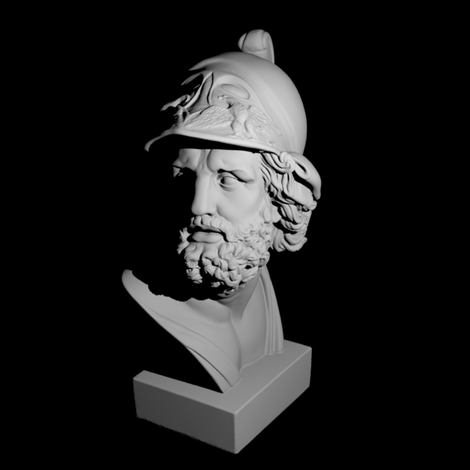
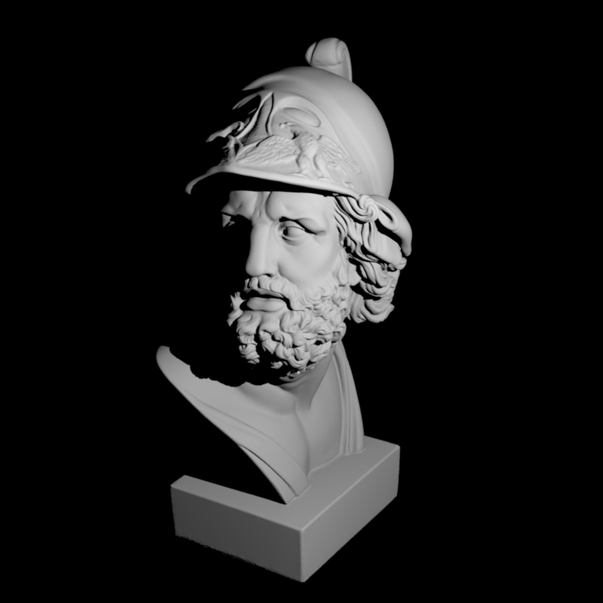
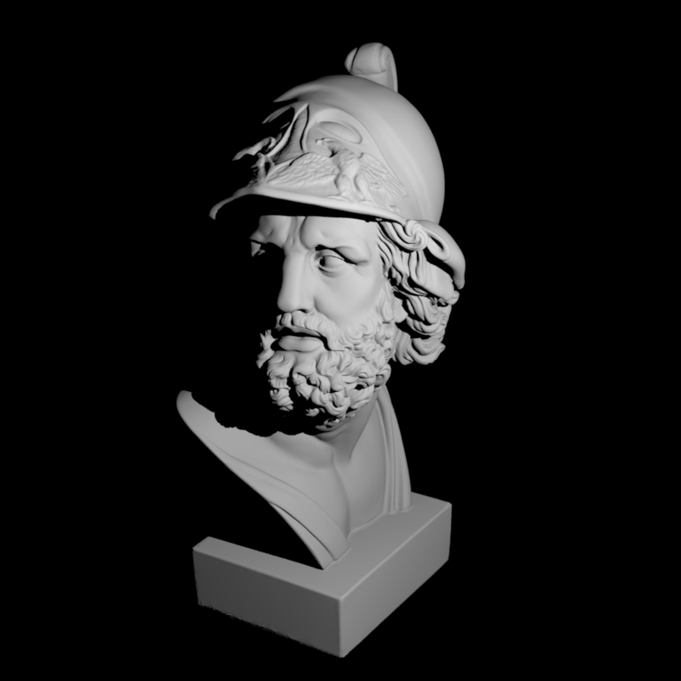

**Homework 3**
Student name: Qiyuan Liang
Sciper number: 323093
Monte Carlo Sampling (60 pts)
=============================
For each of these sections, don't forget to include necessary derivations as well as screenshots of passing $\chi^2$ tests from the warptest executable.
Tent
----
$$ PDF_t =
\begin{cases}
1 - |t| & \quad \text{$-1 \leq t \leq 1$}\\
0 & \quad \text{otherwise}
\end{cases}
$$
$$ PDF_{tent} = PDF_x \times PDF_y
$$
Given the PDF above, the function can be divided into two parts, where 0 is the dividing point. Therefore, we can find CDF by integrating two parts, $-1 \leq t \leq 0$ and $0 \leq t \leq 1$.
$$ CDF =
\begin{cases}
\dfrac{1}{2} (t + 1)^2 & \quad \text{$-1 \leq t \leq 0$}\\
-\dfrac{1}{2} (t - 1)^2 + 1 & \quad \text{$0 \leq t \leq 1$}
\end{cases}
$$
$$ Inverse CDF =
\begin{cases}
\sqrt{2p} - 1 & \quad \text{$0 \leq p \leq 0.5$}\\
-\sqrt{2 - 2p} + 1 & \quad \text{$0.5 \leq p \leq 1$}\\
\end{cases}
$$

Uniform disk
------------
Convert to the polar coordinates, which contain r and $\theta$. We map x to r, and y to $\theta$. To counter the effect of distortion by coordinate system, we need $PDF = \dfrac{r}{\pi}$ on the source domain. To match the desirable distribution, we generate r proportional to r, and generate $\theta$ uniform.
$$ PDF_r = 2r, \quad CDF_r = r^2, \quad InverseCDF_r = \sqrt{p}\\
PDF_{\theta} = \dfrac{1}{2\pi}, \quad CDF_{\theta} = \dfrac{\theta}{2\pi}, \quad InverseCDF_{\theta} = 2\pi p
$$
$$ PDF_{disk} = PDF_r \times PDF_{\theta} = \dfrac{1}{\pi}
$$

Uniform sphere
--------------
To sample points on sphere, we use the spherical coordinate that uniquely identify a point. To optimize the algorithm execution speed, we do not directly sampling theta and $\phi$, instead, we sample the z component of the vector, and $\theta$. Both of them can be uniformly sampled.
$$ PDF_z = \dfrac{1}{2}, \quad CDF_z = \dfrac{x+1}{2}, \quad InverseCDF_z = 2p - 1\\
PDF_{\theta} = \dfrac{1}{2\pi}, \quad CDF_{\theta} = \dfrac{\theta}{2\pi}, \quad InverseCDF_{\theta} = 2\pi p
$$
$$ PDF_{uniformSphere} = PDF_z \times PDF_{\theta} = \dfrac{1}{4\pi}
$$

Uniform hemisphere
------------------
Hemisphere is the same as sphere, except that we convert the vector with the wrong direction to the correct direction (0, 0, 1). Therefore, there is no need to change previous PDF, CDF, and InverseCDF.
$$ PDF_z = \dfrac{1}{2}, \quad CDF_z = \dfrac{x+1}{2}, \quad InverseCDF_z = 2p - 1\\
PDF_{\theta} = \dfrac{1}{2\pi}, \quad CDF_{\theta} = \dfrac{\theta}{2\pi}, \quad InverseCDF_{\theta} = 2\pi p
$$
$$ PDF_{uniformHemisphere} = PDF_{|z|} \times PDF_{\theta} = \dfrac{1}{2\pi}
$$

Cosine hemisphere
-----------------
Cosine hemisphere can be generated by first generate uniform samples on disk, then project the points directly to the hemisphere. By nature, its distribution will satisify the cosine property. For a unit hemisphre, we have $r=1$, and we have the following PDF, where $\theta$ is the angle between the vector and $(0, 0, 1)$.
$$ PDF_{cosineHemisphere} = \dfrac{\cos{\theta}}{\pi} = \dfrac{z}{\pi}
$$

Beckmann distribution
---------------------
After transformed into the spherical coordinates, the Beckmann distribution can be expressed using $\theta$ and $\phi$. The distribution is symmetric around the north pole, therefore, we can consider one dimension at a time.
For $\theta$, we sample $\tan^2(\theta)$ instead. Detailed derivative procedures are shown below,
$$
\begin{aligned}
PDF & = \dfrac{2e^{\dfrac{-\tan^2{\theta}}{\alpha^2}}}{\alpha^2 \cos^3(\theta)} \text{, substitute $\cos(\theta)$ by $x$}\\
& = \dfrac{2e^{\dfrac{x^2-1}{x^2\alpha^2}}}{\alpha^2 x^3}\\
CDF & = \int_0^{\dfrac{\pi}{2}} \dfrac{2e^{\dfrac{-\tan^2{\theta}}{\alpha^2}}}{\alpha^2 \cos^3(\theta)} \sin(\theta) \: \mathrm{d}\theta \text{, substitute $\cos(\theta)$ by $x$}\\
& = \int_1^0 \dfrac{2e^{\dfrac{x^2-1}{x^2\alpha^2}}}{\alpha^2 x^3} \: \mathrm{d}x\\
& = 1 - e^{\dfrac{x^2 - 1}{x^2\alpha^2}} \text{, change $x$ back to $\cos(\theta)$}\\
& = 1 - e^{\dfrac{-\sin^2(\theta)}{\cos^2(\theta)\alpha^2}}\\
& = 1 - e^{\dfrac{-\tan^2(\theta)}{\alpha^2}} \text{, substitute $\tan^2(\theta)$ by $t$}\\
& = 1 - e^{\dfrac{-t}{\alpha^2}}\\
InverseCDF_t & = - \alpha^2 \ln(1 - p) \text{, where $t$ = $\tan^2(\theta)$}
\end{aligned}
$$
For $\phi$, it is sampled uniformly.
$$
PDF_{\phi} = \dfrac{1}{2\pi}, \quad CDF_{\phi} = \dfrac{\phi}{2\pi}, \quad InverseCDF_{\phi} = 2\pi p
$$
Overall PDF is:
$$
PDF_{Beckmann} = \dfrac{1}{2\pi} \cdot \dfrac{2e^{\dfrac{-\tan^2{\theta}}{\alpha^2}}}{\alpha^2 \cos^3(\theta)}
$$

Two simple rendering algorithms (40 pts)
========================================
Point lights
------------
For point light, the color is defined as
$$ L(x) = \dfrac{\phi}{4 \pi^2} \dfrac{max(0, \cos(\theta))}{||x-p||^2}V(x \leftrightarrow p)
$$
After finding out the intersection point $x$, it is easy to compute $||x-p||^2$ and $cos(\theta)$. To check whether $x$ and $p$ are mutually visible, I generate ray with $origin=x$, and with $direction = p-x$, to check whether it has an intersection with the scene. If there is no intersection found, $p$ and $x$ are mutually visible.
Ajax bust illuminated by a point light source:

Ambient occlusion
-----------------
For ambient occlusion, the color is defined as
$$ L(x) = \int_{H^2(x)} V(x, x+\alpha\omega_i) \dfrac{\cos(\theta)}{\pi} \: \mathrm{d}\omega_i
$$
We are in a discrete case, so we only sample finite directions on a single pixel. After warping a normal uniform square sample to the cosine hemisphere, we have the distribution $\dfrac{\cos(\theta)}{\pi}$. With this warping technique, the portion of the non-shadow rays is the color of the pixel. The Li function can directly return whether current sampling direction is visible or not.
Ajax bust rendered using ambient occlusion:
Hacker Points: Hierarchical Sample Warping (20 points)
======================================================
For hierarchical warping, first, the Mipmap of the input EXR's normalized luminance is built. Then, starting from the children of the root, the mapping from the uniform 2D samples to hierarchical ones can be done as follows:
1. Initialize $x = sample.X(), y = sample.Y(), idx = 0, idy = 0$.
2. $idx *= 2, idy *= 2$
3. Compute the sum of the top and bottom 2 squares separately [(idx, idy), (idx, idy+1), (idx+1, idy), (idx+1, idy+1)], and computes the ratio between them ($ratio_x$).
4. Given the ratio computed, if $x < ratio_x$, goes to step 5. Else, goes to step 6.
5. It falls into the top part.
- Compute $x = \dfrac{x}{ratio_x}$, to remap $x$ to the range of $[0, 1]$.
- Compute the left and right ratio in the top part ($ratio_y$), if if $y < ratio_y$, goes to step 7. Else, goes to step 8.
6. It falls into the bottom part.
- $idx = idx + 1$.
- Compute $x = \dfrac{x-ratio_x}{1-ratio_x}$, to remap $x$ to the range of $[0, 1]$.
- Compute the left and right ratio in the bottom part ($ratio_y$), if if $y < ratio_y$, goes to step 7. Else, goes to step 8.
7. It falls into the left part.
- Compute $y = \dfrac{y}{ratio_y}$, to remap $y$ to the range of $[0, 1]$.
8. It falls into the right part.
- $idy = idy + 1$.
- Compute $y = \dfrac{y-ratio_y}{1-ratio_y}$, to remap $y$ to the range of $[0, 1]$.
9. If does not reach the full resolution layer, go to step 2.
10. Return point with $x=\dfrac{idx + x}{resolution_x}$, $y=\dfrac{idy + y}{resolution_y}$
Computing the CDF is easy, we can return the normalized luminance of the target pixel, and times the full resolution.
Following is the evaluted results, on 2x2 normalized luminance = $\begin{bmatrix}
0.6 & 0.2 \\
0.04 & 0.16
\end{bmatrix}$ and 256x256 real EXR images.


 
